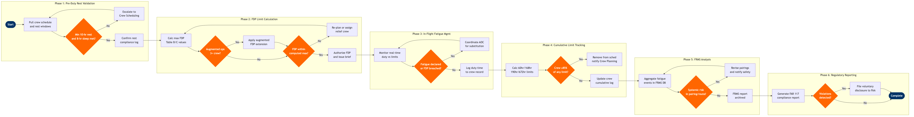

| Step | L4 Step Name | KPI / Target | Pain Point / Risk | Gate |
|---|---|---|---|---|
| 1.1 | Pull crew schedule and rest window data | 100% of crew records extracted ≤15 min before duty window opens | Roster amendments late in the day can invalidate pre-computed rest windows; Jeppesen batch refresh cycles may lag real-time pairing changes by up to 30 minutes | |
| 1.2 | Validate minimum rest vs FAR 117.25 requirement | Zero crew members assigned with <10-hr rest or <8-hr sleep opportunity; compliance check completed ≥4 hrs before scheduled report time | FAR 117.25 requires rest free from all restraint including deadhead travel; mis-classification of deadhead as rest is a common audit finding and can trigger FAA enforcement action | ⚠ |
| 1.3 | Escalate non-compliant rest to Crew Scheduling | 100% of rest violations resolved ≥2 hrs before report time; zero crew members reporting for duty with open violation | Replacement pool exhaustion during irregular operations forces cascading re-assignments; lack of real-time hotel check-in data makes actual sleep opportunity difficult to verify | |
| 2.1 | Calculate maximum FDP from Table B/C values | FDP calculation completed ≤5 min per crew pairing; 100% of FDPs within published table limits before sign-out | FAR 117 Table B/C values vary by report time window; scheduling systems may default to most permissive bracket if report time is ambiguous, creating compliance risk on early-morning or red-eye pairings | |
| 2.2 | Determine if augmented crew operations apply | Augmented classification accuracy ≥99.9%; mis-classification rate <1 per quarter | Rest facility class (Class 1/2/3) on the aircraft must match the assumption in the FDP extension; discrepancies between charter configuration and published aircraft spec cause mid-trip compliance gaps | ⚠ |
| 2.3 | Apply FDP extension if operationally justified | FDP extensions ≤5% of total monthly pairings; no extension applied without documented crew consent | FAR 117.19 limits extension to once per calendar day and requires crew concurrence; pressure from operations control to extend without concurrence is a recurring safety culture risk | |
| 2.4 | Authorize FDP and issue pre-departure brief | 100% of crew departures with FDP authorization on file; brief packet delivered ≥60 min before report time | Digital brief distribution depends on crew mobile app connectivity; offline crews at remote outstations may not receive updates, requiring phone confirmation fallback | ⚠ |
| 3.1 | Monitor real-time duty time against FDP limits | Real-time duty counter latency ≤15 min; alert triggered ≥30 min before projected FDP breach | ATC ground delays extend FDP without triggering automatic alerts if block-out time is used as the FDP clock start; ambiguity between pushback and engine-start as FDP trigger creates audit exposure | |
| 3.2 | Receive and log crew fatigue self-declaration | 100% of fatigue declarations acknowledged by Crew Tracking within 10 min; zero declarations closed without resolution note | FAR 117.9 gives crew unlimited authority to declare fatigue; ground pressure to continue operations despite declaration is a safety culture issue tracked in ASAP/SMS; anonymous reporting gap remains if crew fear punitive response | ⚠ |
| 3.3 | Coordinate AOC for substitution or flight delay | Replacement crew sourced ≤90 min from declaration for flights with >2 hrs to departure; cancellation rate due to fatigue <0.1% of monthly operations | Reserve pools at outstations are thin; during IROPS a single fatigue declaration can cascade into multi-flight cancellations if no qualified crew is within legal deadhead range | |
| 4.1 | Calculate 60-hr limit in 168 consecutive hours | Zero crew members exceeding 60-hr limit; alert threshold triggered at 51 hrs to allow scheduling intervention | Jeppesen rolling-window calculation relies on accurate block-in times; late ACARS updates during IROPS create data gaps that cause the 168-hr window to be computed from estimated rather than actual times | ⚠ |
| 4.2 | Calculate 190-hr limit in 672 consecutive hours | Zero crew members exceeding 190-hr limit in any 28-day window; alert generated ≥10 days before projected breach | Crew pick-up flying during high-demand periods (holiday banks, peak summer) can push cumulative limits faster than monthly bidding models project; late additions to open-time are the primary cause of 190-hr violations | |
| 4.3 | Track annual 1,000-hr flight time limit | Zero crew members exceeding 1,000 flight hours in any calendar year; 90% threshold alert issued ≥45 days before year-end for projected breaches | Annual limit interacts with contract maximums and PBS bid awards; crew members approaching the limit late in Q4 reduce reserve coverage exactly when holiday operations demand peaks | ⚠ |
| 4.4 | Remove near-limit crew and notify Crew Planning | 100% of limit-alert crew removed from active schedule within 2 hrs of alert; zero limit violations in FAA audit sample | Removing crew mid-rotation at an outstation forces last-minute positioning of replacements; hotel and transportation costs associated with early release are not always captured in scheduling cost models | |
| 5.1 | Aggregate fatigue events in FRMS database | FRMS dataset refreshed within 24 hrs of event; 100% of fatigue events linked to pairing and route data | FRMS data lives in a separate analytics store from Jeppesen operational data; ETL latency and schema mismatches between crew scheduling and safety systems delay monthly trend analysis by 3–5 days | |
| 5.2 | Analyse fatigue patterns by route, base, pairing type | FRMS report issued within 5 business days of month-end; ≥3 pairing types or routes reviewed per cycle | Small event counts per route make statistical significance difficult to establish; safety analysts lack crew scheduling write-back access to act directly on findings without a manual change-request workflow | ⚠ |
| 5.3 | Revise pairings and notify Safety Review Board | 100% of systemic-risk pairings revised within 2 bid periods of identification; recurrence rate of flagged pairing type <20% after revision | Pairing revisions that improve fatigue compliance may reduce utilisation efficiency and increase crew costs; trade-off approval requires VP-level sign-off which extends lead time by 2–4 weeks | |
| 6.1 | Generate FAR 117 compliance report for FAA | Report submitted ≥5 business days before FAA due date; zero data gaps in duty record coverage | FAA may request ad hoc audits beyond scheduled reporting; retrieving complete duty records for specific crew members across legacy and current systems takes 3–5 days if data spans a system migration boundary | ⚠ |
| 6.2 | File voluntary disclosure or corrective action plan | 100% of identified violations disclosed within 10 business days; corrective action plan implemented within 60 days of disclosure | FAA ASAP program requires an established MOU with the local FSDO; airlines without an active ASAP agreement lose the enforcement mitigation benefit and face higher civil penalty exposure for self-disclosed violations |